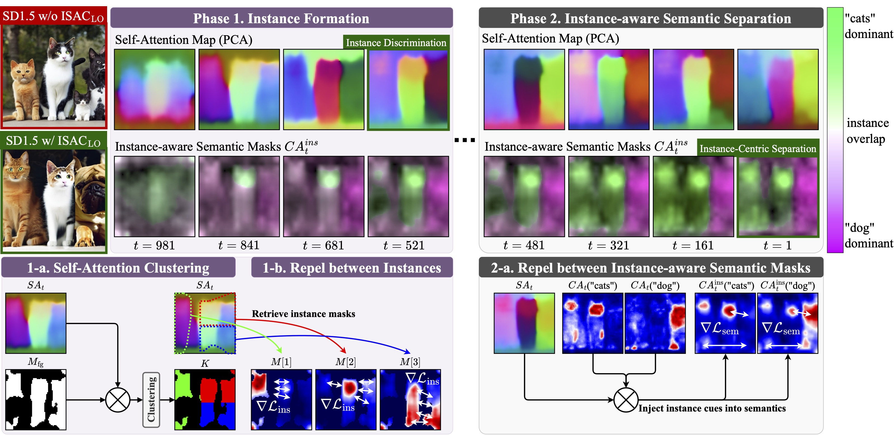

ISAC: Training-Free Instance-to-Semantic Attention Control for Improving Multi-Instance Generation
ECCV 2026
Explicitly guiding T2I diffusion models to follow the instance-to-semantic hierarchy, where the model first establishes vivid instance layouts and then refines semantic details, is essential for effective multi-instance generation.